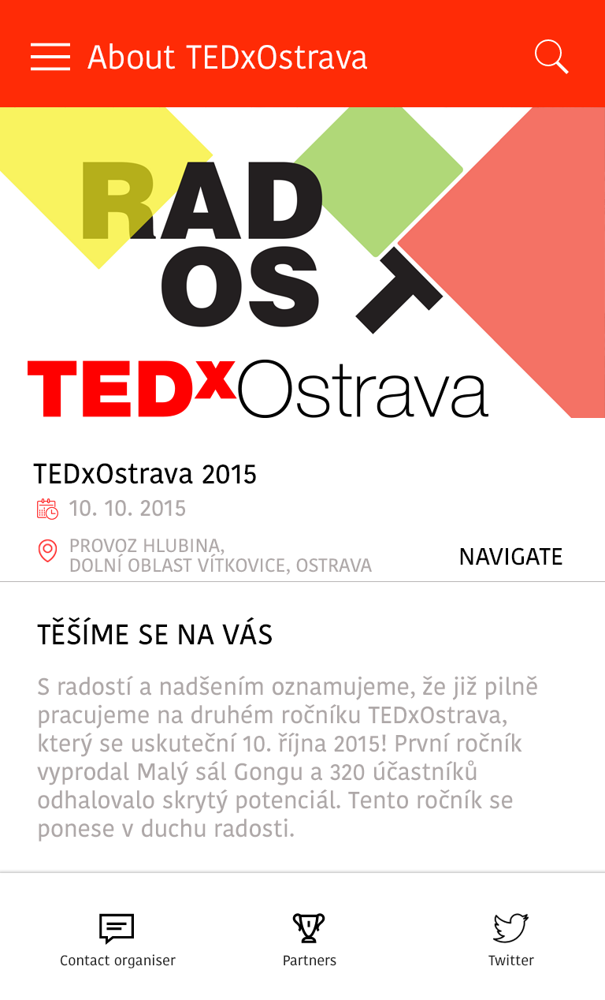
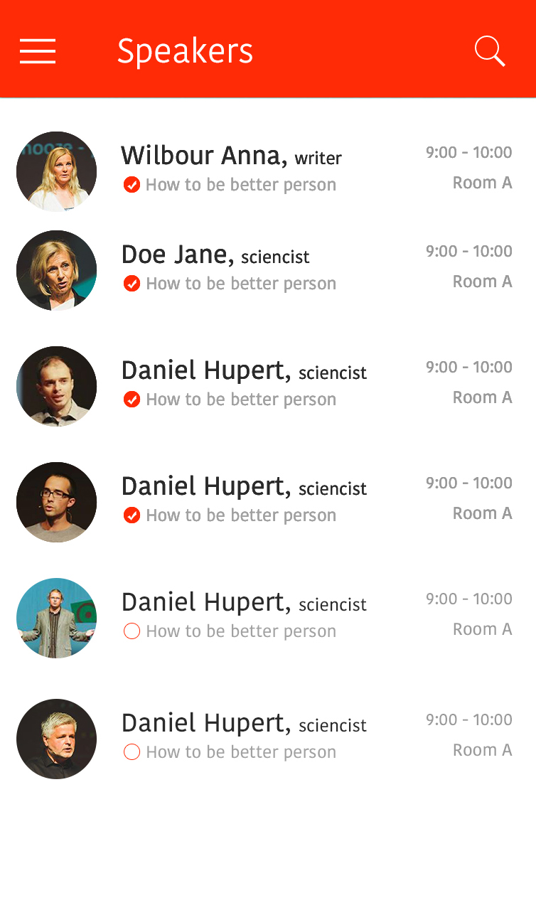
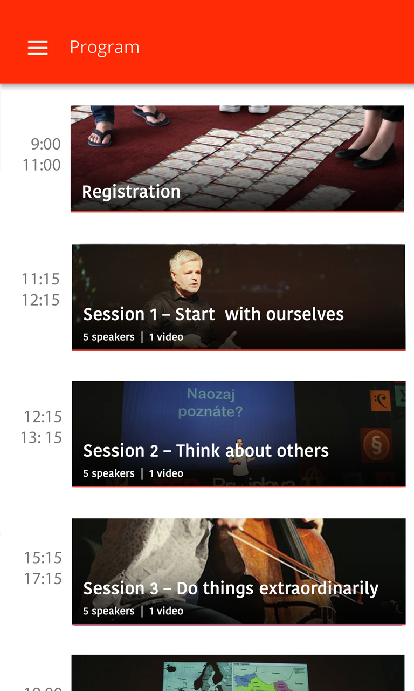
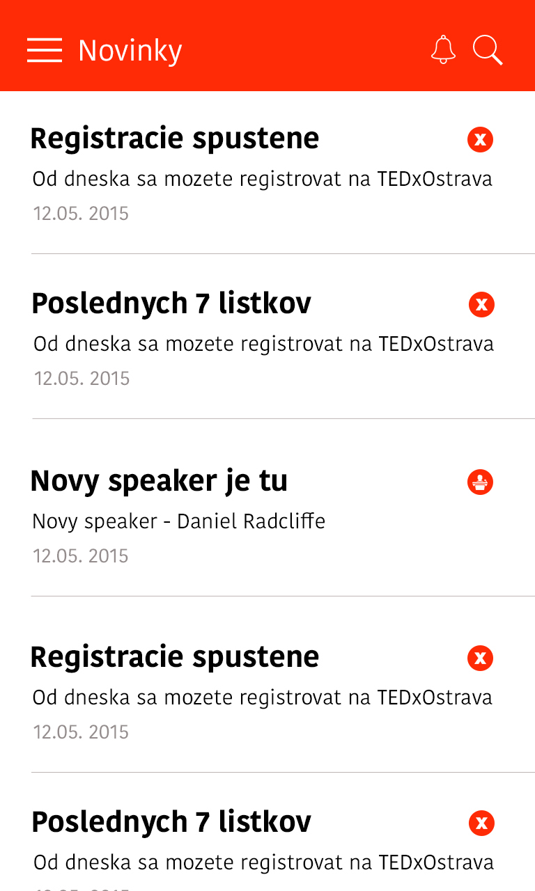

It’s an app for TEDx conferences, and it solves the problem of inconsistencies of different platforms in the ways of registration of participants, running administration and managing all TEDx conferences around the world.
The main role of the application is providing a unified interface for organisers. Basic functionality will include the following:
The goal is to help organisers save time and automatize all process with TEDx team - little touches make for happier speakers and participants, which means better reviews and a good brand.
TEDx conferences/year
TEDx speakers/year
TEDx participants/year
countries
Basic information about conference, place, time, navigation and organiser contact information. 
Manage all speakers, program and other details about speaker with twitter and contact information.

Manage all program, sessions, sections and manage registrations.

Publish news to mobile app in real time about speakers, program, registrations and much more.
